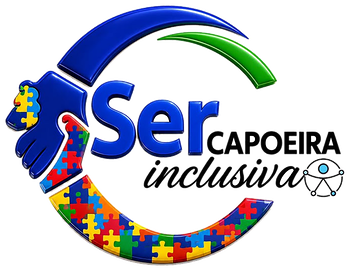
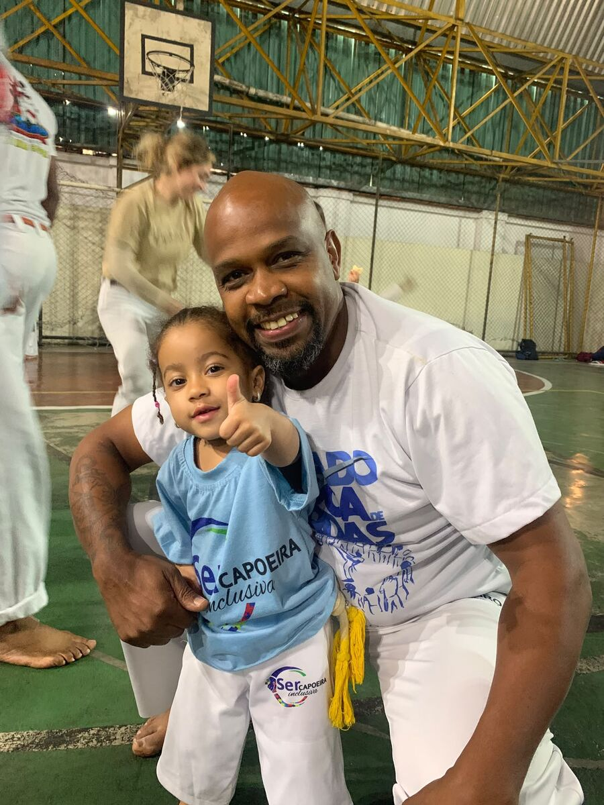
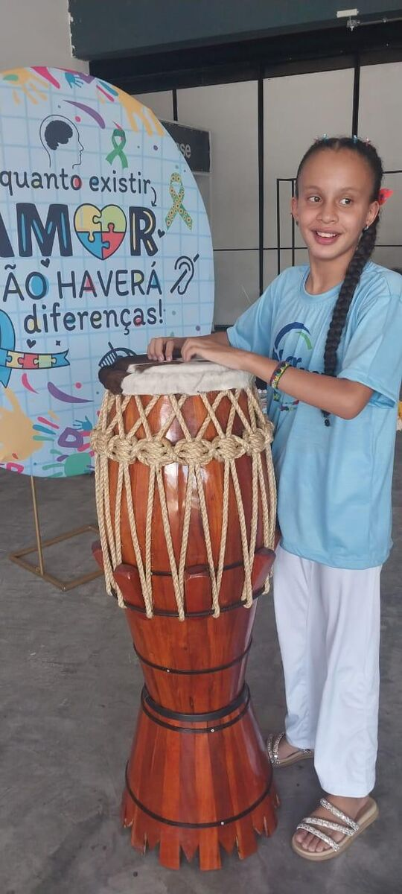
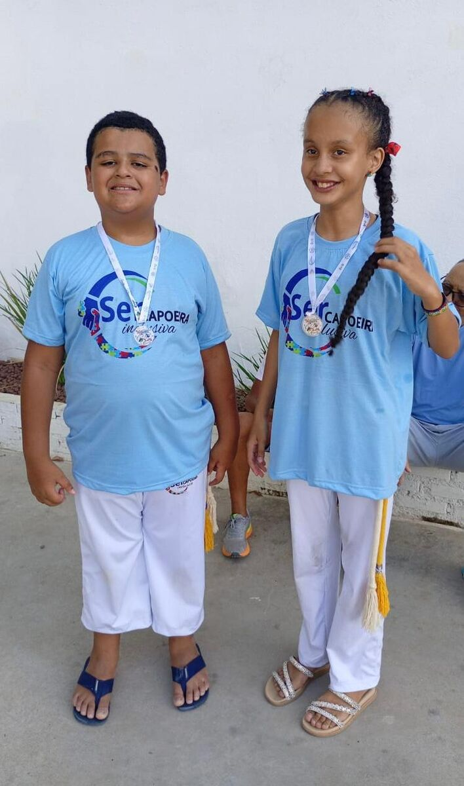

Acolher
Receber cada pessoa respeitando suas características e seu ritmo.
Ser Capoeira Inclusiva Adaptada · Juiz de Fora — MG
A inclusão começa quando cada pessoa encontra seu espaço na roda.
O Ser Capoeira Inclusiva Adaptada promove acolhimento, participação e inclusão por meio da capoeira, respeitando as características, o ritmo e as possibilidades de cada pessoa.

 Professor Dinho
Professor Dinho
32 anos de capoeira
(01) O nome

Refere-se à sua identidade, essência, valores, crenças e autoconsciência. É quem você é e no que você acredita sobre si mesmo.
A capoeira é uma expressão cultural afro-brasileira que mistura arte marcial, dança, acrobacias, música e tradição. É reconhecida como Patrimônio Cultural Imaterial da Humanidade pela UNESCO e Patrimônio Cultural do Brasil pelo IPHAN.
Inclusiva quando deixamos de enxergar apenas o diagnóstico e passamos a reconhecer a pessoa, suas potencialidades, suas necessidades e suas infinitas possibilidades de aprender.
(02) Quem somos
O Ser Capoeira nasceu para ser uma ferramenta de inclusão, promovendo a integração de crianças, jovens e adultos típicos e atípicos, pessoas com deficiência e pessoas com síndrome de Down no universo da capoeira.
O projeto é conduzido pelo Professor Dinho (Elizomar Nascimento), que pratica capoeira há 32 anos e dá aulas adaptadas para crianças, adolescentes e adultos em Juiz de Fora.
Conheça nossa história
(03) Nosso propósito
O lema do Ser Capoeira Inclusiva Adaptada.
Receber cada pessoa respeitando suas características e seu ritmo.
Estimular a autonomia, a expressão corporal e o desenvolvimento motor, dentro das possibilidades de cada pessoa.
Promover a integração de pessoas típicas e atípicas por meio da capoeira.





(04) Capoeira inclusiva adaptada
A Capoeira Inclusiva Adaptada é uma oportunidade para que cada pessoa seja acolhida, respeitada e estimulada dentro das suas próprias possibilidades.
(05) Projetos e eventos
Evento recreativo anual para crianças e adultos típicos e atípicos.
Ver projetos e eventos
(06) Como ajudar
Veja como apoiar o projeto.
Doações via PIX, com QR Code na página Ajude.
Quem quiser colaborar pode falar com o Professor Dinho.
Empresas, instituições e profissionais podem apoiar o projeto.
Compartilhar as atividades também é uma forma de ajudar.
Faça parte
Fale com o Professor Dinho pelo WhatsApp.